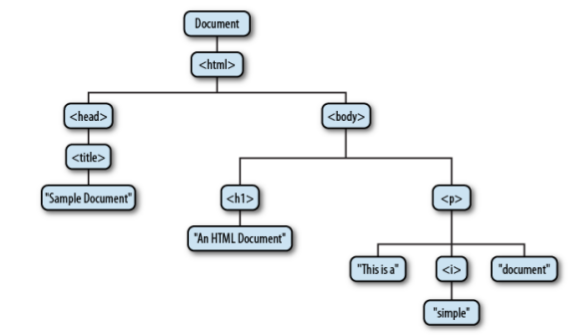

Client-Side javascript
js运行方式
- <script>…..</script>内嵌
- <script src="path-to-js-file"> </script> 外部js文件
- 事件处理，比如button的 onclick, onmouseover等等
- javascript urls
任何能使用url的地方，比如 a 标签的href，form的action使用如下代码：
<a href="javascript: alert('hello world');"></a>
这相当于单行代码，以javascript：开头，告诉浏览器下面的是js代码，当这行js有返回值时，firefox会替换掉当 前的页面为js的执行结果，所以如果要阻止这种行为，那么可以统一在js代码的前面加上void ，比如
<a href="javascript:void new Date().toLocaleTimeString();">Check the time without overwriting the document</a>
Bookmarklets 加入书签，那么这段代码就相当于直接插入了当前页面，比如订阅到鲜果的书签：
javascript:window.open('http://xianguo.com/subscribe?url='+encodeURIComponent(location.href), 'xianguo');void(0)
global window object
timers
- setTimeout(callback, timeout) : 只运行一次callback，返回值可以传递给clearTimeout来清除定时器
- clearTimeout()
- setInterval(callback, interval) : 每隔interval就运行一次callback,返回值可以传递给clearInterval来清除定 时器
- clearInterval()
window.location
window.location指向一个Location object,这个object有一系列的属性,以 http://www.oreilly.com:1234/catalog/search.html?q=JavaScript&m=10#results 为例
- href: 整个url,如果对该属性赋值,则可以重定向到新url
- protocal: 'http:'
- host: 'http://www.oreilly.com:1234'
- hostname: 'http://www.oreilly.com'
- port: '1234' 是一个字符串,不是数字
- pathname: '/catalog/search.html'
- search: '?q=JavaScript&m=10'
- hash: '#results' anchor part of url
window.history
- history.forward(): 前进
- history.back(): 后退
- history.go(2), history.go(-2) : 前进2个页面,后退两个页面
window.navigator
- appName:
- appVersion:
- userAgent:
- paltForm
window.document
- referrer: 一个错误的拼写, 主要用来指示用户是从什么链接跳转到该文档, 可以 用来防盗链, 和HTTP中referer类似
- cookie: 设置cookie
- title: text between
<title>and</title>. - domain:
DOM
node
node: DOM树中的一个节点, 以下面这段html为例:
<html> <head> <title>Sample Document</title> </head> <body> <h1>An HTML Document</h1> <p>This is a <i>simple</i> document. </html>
那么DOM树是这样的: 
节点指针以及属性
因为是树中的节点所以每个node对象都有以下的指针(以n代表一个node对象):
- n.parentNode: n的父节点对象
- n.previousSibling: n的前一个兄弟节点对象
- n.nextSibling: n的下一个兄弟节点对象
- n.firstChild: n的第一个子节点对象
- n.lastChild: n的最后一个子节点对象
- n.childNodes: 返回一个类数组结构,包含所有的子节点.
- n.firstElementChild: 第一个元素节点, 这在排除一些空格导致上的文本节点时 特别有用
- n.lastElementChild:
- n.childElementCount: 子节点中元素节点的个数
除了节点指针外, 节点还有其它一些属性:
- nodeType: The kind of node this is. Document nodes have the value 9. Element nodes have the value 1. Text nodes have the value 3. Comments nodes are 8 and Document- Fragment nodes are 11.
- nodeValue: The textual content of a Text or Comment node.
- nodeName: The tag name of an Element, converted to uppercase.
node type
有三种节点类型:
- Document Node: 最上方的那个节点, 用来代表整个文档, 这种节点一份文档只有 一个
- Element Node: 用来代表html元素, 比如上图中的head节点就代表html中
<head>...</head>. - Text Node: 代表文本,比如上例中
Sample Document节点.
Element node's attribute
element node代表一个html元素, 他可以直接获得以及设置该html元素的属性,假设f 是一个form元素, 那么可以使用下面的代码:
f.action === "http://www.baidu.com" // test form's action attribute f.method = "POST" // set the form's method attribute to "POST"
注意上面的方式返回值都是字符串, 所以要获得整数,可以使用parseInt, 而且只对 标准的html属性有效, 非标准的属性可以使用这两个函数来获取:
- getAttribute
- setAttribute
比如在html5中可以给一个元素设置以 data- 作为前缀的属性, 比如 data-id,
支持html5的浏览器会有一个 dataset 属性, 如果n代表元素节点,那么
n.dataset.id, n.dataset.time 就会分别获得 data-id 以及 data-time 的
值, 但是在不支持html5的浏览器上这就不是标准属性, 所以就需要
n.getAttribute('data-id'), n.getAttribute('data-time').
Element node's content
- innerHTML : 元素内的 html文本(不包含该元素本身的标签)
- textContent/innerText: 可以看作是innerHTML去掉所有的 HTML标签后得到的文 本. IE没有定义textContent, firefox没有定义 innerText.
- outerHTML: 和innerHTML相同,但是它会包含该元素本身的标签
选择DOM节点
- document.getElementById: 返回单个DOM节点
- document.getElementsByName: 根据name属性查找, 返回NodeList, 这是一个类数 组对象, 只读.
- document.getElementsByTagName
- document.getElementsByClassName
- document.querySelectorAll: 通过css selector来选择元素, 返回一个类数组结 构
- document.querySelector: 和 querySelectorAll 类似,只是它值返回第一个匹配 的对象, 如果没有匹配的那么返回 null.
创建新DOM节点
document.createElement: 创建元素节点
var div = document.createElement('div');
- document.createTextNode: 创建文本节点
插入DOM节点
可以使用 insertBefore 与 appendChild 这两个节点方法
parentOfBeforeNode.insertBefore(NodeToInsert, beforeNode); parentElem.appendChild(nodeToInsert);
有两个方便的函数:
var before = function(parent, before, elem){ // check if passed ``parent'' if (! !!elem){ elem = before; before = parent; parent = before.parentNode; } parent.insertBefore(checkElem(elem), before); }; var append = function(parent, elem){ parent.appendChild(checkElem(elem)); };
删除,替换DOM节点
删除节点可以用 removeChild 函数.
NodeParent.removeChild(NodeToRemove);
所以你如果要删除一个DOM节点 n, 应该使用这样的代码:
n.parentNode.removeChild(n);
替换一个节点使用 replaceChild 方法.
n.parentNode.replaceChild(document.createTextNode("[ REDACTED ]"), n);
位置,scroll
有两种坐标系统, 一种是 viewpoint coordinate, 一种是 document coordinate, 前 者只考虑可见的窗口部分,也就是说坐标系的原点在窗口的左上角,也就是所谓的 client area的左上角, 通常这就是浏览器的窗口(不包括菜单栏, 工具栏,任务栏), 但是如果文档是显示在一个iframe中, 那么就是只包含iframe占用的部分, 后者还要 考虑滚动条,(坐标系的原点在文档的左上角).一般二者可以这样转换
documentX = viewpointX + scrollX documentY = viewpointY + scrollY
scrollX, scrollY 代表滚动条滚动的距离.
获得viewpoint坐标
var box = e.getBoundingClientRect() box.top; box.right; box.bottom; box.left;
e是一个DOM节点元素, 返回的那几个属性都可以为负值或者大于屏幕, 这意味着该 元素目前不在视图之中. 根据这四个值我们可以计算元素的精确大小.对隐藏元 素无效.
var box = e.getBoundingClientRect(); var w = box.width || (box.right - box.left); // width var h = box.height || (box.bottom - box.top); // height
获得滚动条的offset
function getScrollOffsets(w) { // Use the specified window or the current window if no argument w = w || window; // This works for all browsers except IE versions 8 and before if (w.pageXOffset != null){ return {scrollX: w.pageXOffset, scrollY: w.pageYOffset}; } // For IE (or any browser) in Standards mode var d = w.document; if (document.compatMode == "CSS1Compat"){ return { scrollX: d.documentElement.scrollLeft, scrollY: d.documentElement.scrollTop }; } // For browsers in Quirks mode return { scrollX: d.body.scrollLeft, scrollY: d.body.scrollTop }; }
- scroll
- scrollTo(aka scroll): window对象的方法, 指定x,y坐标, 浏览器就会滚动到 对应位置
- scrollIntoView: 一个Dom 节点的方法, 可以将这个元素滚动到视图中来.
修改css
注意因为js中标识符中不能使用 - , 所以使用驼峰命名, 比如css的 font-size 在js
中就用, fontSize.
使用style属性来修改css
e.style.position = "absolute"; e.style.fontFamily = "sans-serif"; e.style.backgroundColor = "#ffffff";
代码中 e 是一个 Element Node. 注意上面的代码实际是创建行内样式, 因此设置
样式时很有效, 因为行内样式优先级最高, 但是获取样式就不能用这种方法, 因为
很可能该元素的样式在外部样式表中, 而不是行内样式中, 那么这种情况你使用这
样的代码 e.style.position 会返回 "",
获取当前的样式
返回当前应用在该元素上的某项css值.
var getStyle = function (elem, name){ if(elem.currentStyle){ // IE browser return elem.currentStyle[name]; }else if (!! window.getComputedStyle){ // W3C method(window.getComputedStyle) name = name.replace(/([A-Z])/g, "-$1"); name = name.toLowerCase(); var s = window.getComputedStyle(elem, ""); return s && s.getPropertyValue(name); }else{ return null; } };
上面的函数可以这样使用 getStyle(document.body, 'font-size'), 但是它在获
取一些值比如 width 时, 可能返回 "%11"这样的值, 而不是计算后的值.
className
通过className属性来修改HTML元素的 class属性, 之所以不用class这个词是因为它是 js的关键字.
事件
Event Object
通用属性:
- type: 一个字符串,比如 'load', 'click', 'mouseover'等等.
- target/srcElement: 触发事件的DOM元素, 后者是IE
- stopPropagation()/cancelBubble: 阻止冒泡, 后者是IE
- preventDefault()/returnValue=false: 阻止默认行为, 后者是IE
还有一些事件有一些特别的属性:
- 鼠标事件有以下几个比较重要的属性:
- clientX, clientY: 鼠标在窗口中X, Y坐标, viewpoint coordinate.
- pageX, pageY : 鼠标相对于文档的x, Y坐标, document coordinate(IE中无效).
- 键盘事件有: ctrlKey, shiftKey, keyCode
常用事件类型
window的事件
- load
- scroll
UI事件
- focus: element gains input focus
- blur: element loses input focus
鼠标事件
- click
- dblclick
- mouseover
- mouseout
- mousedown
- mouseup
- mousemove
键盘事件
- keydown/keypress: 二者是同义事件, 但是在阻止按键的默认行为时则只能用 keypress, 当你按组合快捷键时, 它会触发多个该类事件.
- keyup
表单事件
- select: 选择了文本时触发
- change: <input type="text" />, <input type="password" />, <select>,
<textarea>等的内容改变且失去焦点时触发. 如果是文本框,当然还有keypress 事件. - submit: 这是form对象的事件, 它在表单被提交时触发.
- reset
Register Event Handler
onevent: 实际就是设置元素的html属性.基本代码模式如下:
window.onload = function(evt){...};这种方法有一些优缺点:
- 优点: 事件处理函数中this被正确绑定到当前元素,同时这种方法兼容性很好
- 缺点: 一个元素对一类事件只能绑定一个事件处理函数, 重复绑定会覆盖以前的 绑定. 同时事件对象参数只在非IE浏览器有效(IE浏览器使用全局事件对象).
addEventListener: 代码模式如下:
window.addEventListener('load', function(){...}, false);- 优点: 可以绑定多个事件处理函数, this被正确绑定, event对象作为第一个参 数传递给事件处理函数
- 缺点: IE不支持
- IE(attachEvent) 在这种模式中, 如果要阻止浏览器的默认行为, 那么事件处理函数应该调用
- 这是一个比较好的版本, 你可以从这里下载.
Event Cancellation
阻止浏览器默认行为
如果是onevent这种模式注册的事件处理函数, 要阻止浏览器的默认行为, 那么事件处
理函数应该返回false, 如果是addEventListener注册的事件处理函数, 要阻止浏览器
的默认行为, 那么事件处理函数应该调用 event.preventDefault(). 如果是
IE(attachEvent)注册的事件处理函数, 那么事件处理函数应该调用
event.returnValue=false;. 因此为了使这三中情况都能生效, 一般使用这样的代
码:
var eventHandler = function(evt){ evt = evt || window.event; // for IE if (evt.preventDefault){ // standard technique evt.preventDefault(); } if (evt.returnValue){ // IE evt.returnValue = false; } return false; // onevent }
阻止事件冒泡
阻止事件冒泡, 如果event有stopPropagation, 那么调用该函数, 如果是IE, 设置 cancelBubble设为true.
var eventHandler = function(evt){ if (evt && evt.stopPropagation){ // non IE evt.stopPropagation(); }else{ // IE window.event.cancelBubble = true; } }
通用函数
获得事件处理函数中event对象(IE使用全局的event对象, 而非IE显式的传递event 对象作为参数给事件处理函数)
var eventhanlder = function(evt){ evt = evt || window.event; }
ajax
Create XMLHttpRequest
IE6没有标准的XMLHttpRequest构造函数, 可以使用以下代码模拟:
// Emulate the XMLHttpRequest() constructor in IE5 and IE6 if (window.XMLHttpRequest === undefined) { window.XMLHttpRequest = function() { try { // Use the latest version of the ActiveX object if available return new ActiveXObject("Msxml2.XMLHTTP.6.0"); } catch (e1) { try { // Otherwise fall back on an older version return new ActiveXObject("Msxml2.XMLHTTP.3.0"); } catch(e2) { // Otherwise, throw an error throw new Error("XMLHttpRequest is not supported"); } } }; }
然后使用 var req = new XMLHttpRequest() 来创建
open
指定verb('GET', 'POST'), url, async(true为异步, false为同步).
req.open(verb, url [, async]);
接着你可以使用 setRequestHeader 来指定http 头部, 这在使用 POST时特别重要,
因为你要指定你传递的数据类型(Content-Type).
req.setRequestHeader('Content-Type', "text/plain;charset=UTF-8");
可以使用多个 setRequestHeader 语句.
send
req.send(msg);, 如果是 GET,那么msg为null, 如果是 POST, msg为你要传递的内
容.
Retrieving the Response
如果请求完成,那么XMLHttpRequest会有以下属性:
| status | 一个数值, 比如200, 404 |
| statusText | 一个字符串,比如"OK", "Not Found" |
| getResponseHeader() | 获得HTTP头部 |
| getAllResponseHeader() | |
| responseText | 文本 |
| responseXML | XML, 实际就是将文本解码成DOM树 |
因为http请求一般都是异步发送, 所以必须要有一个事件来通知请求已经完成.这个事
件就是 readystatechange, 从理论上上说, 当 XMLHttpRequest 的 readyState属
性变动时都应该触发该事件, 但实际并不是如此, 下面是redayState的值:
| Constant | Value | Meaning |
|---|---|---|
| UNSENT | 0 | open() has not been called yet |
| OPENED` | 1 | open() has been called |
| HEADERS_RECEIVED | 2 | Headers have been received |
| LOADING | 3 | The response body is being received |
| DONE | 4 | The response is complete |
一般来说从0到1是不会触发事件的, 但是调用send会触发事件,即便这时候
readyState 的值没有改变,都是1, 在实践中我们也只对特定的 readyState变动感
兴趣(主要是4, 也就是请求完成), 所以在事件处理函数中我们一般要测试
readyState的值比如下面这个函数:
function getText(url, callback) { var request = new XMLHttpRequest(); // Create new request request.open("GET", url); // Specify URL to fetch request.onreadystatechange = function() { // Define event listener // If the request is compete and was successful if (request.readyState === 4 && request.status === 200) { // get type var type = request.getResponseHeader("Content-Type"); if (type.indexOf('xml') !== -1 && request.responseXML){ callback(request.responseXML); }else if (type === "application/json"){ callback(JSON.parse(request.responseText)) // JSON response } else{ callback(request.responseText); // String response } } }; request.send(null); // Send the request now }
注意 readyState 为 4 只是说请求已经完成,但并不一定请求成功, 有可能是404
或其它http错误, 只有测试 status 为 200 时才是成功的http请求.
jsonp
实际就是创建一个 <script>...</script> 节点, 然后将其插入文档, 这样浏览器会
自动的发送一个http get请求,并且把请求得到的内容当做 js代码来执行. 根据这个原
理,那么服务器必须生成能执行的js代码,而不仅仅只是返回数据, 也就是说一般要指定
一个处理函数作为前缀(prefix), 这也是jsonp中p的由来. 为了指定这个处理函数, 一
般在url中指定, 比如在url的后面添加 ?jsonp=handler 或者 ?callback=handler,这
样服务器端就知道你指定的处理函数了.